Illustration
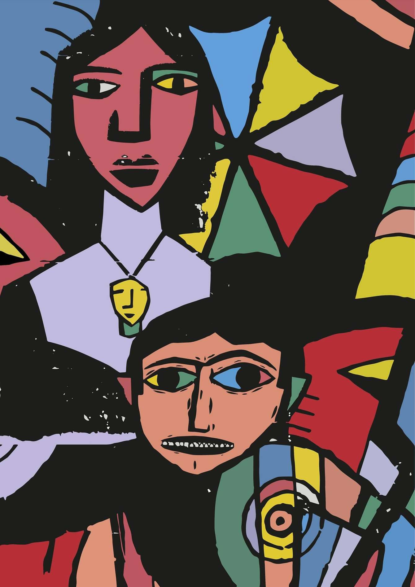
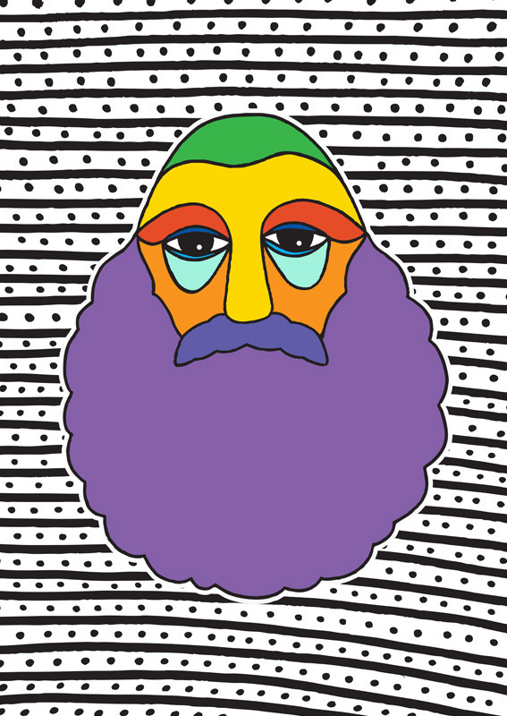
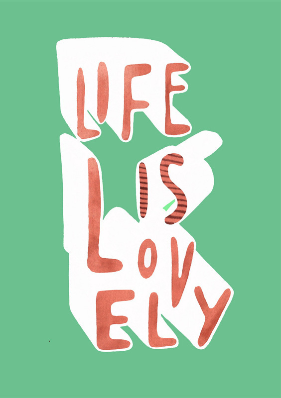
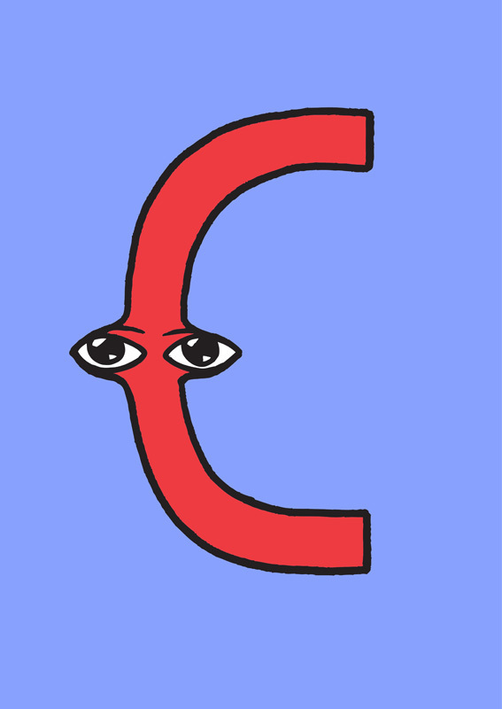
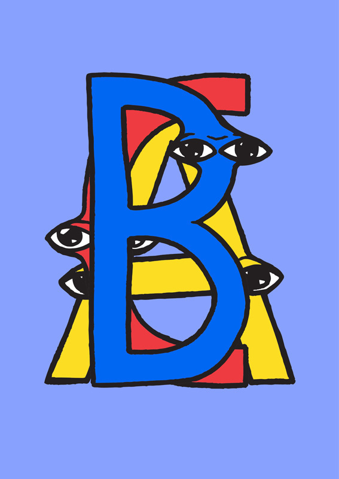
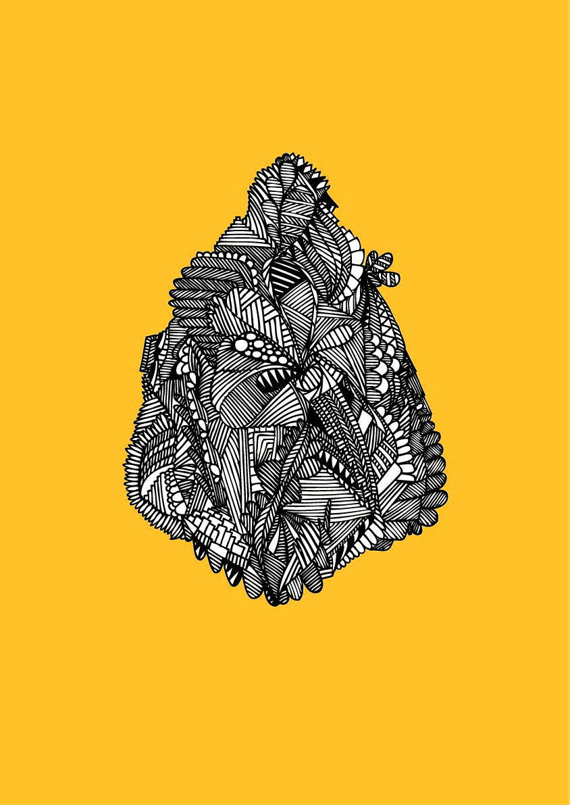
 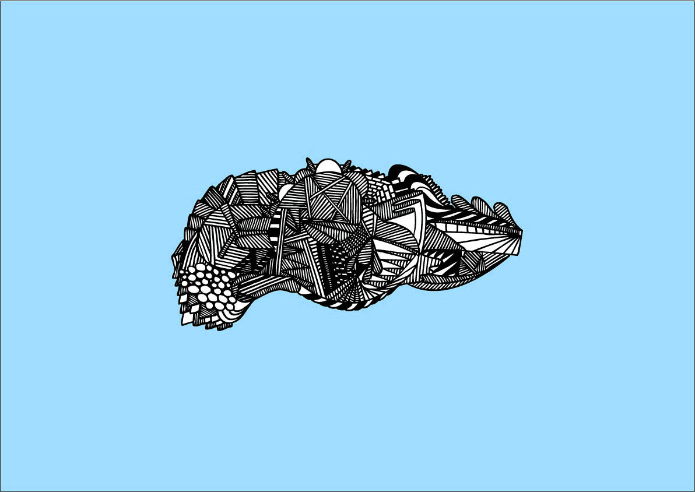
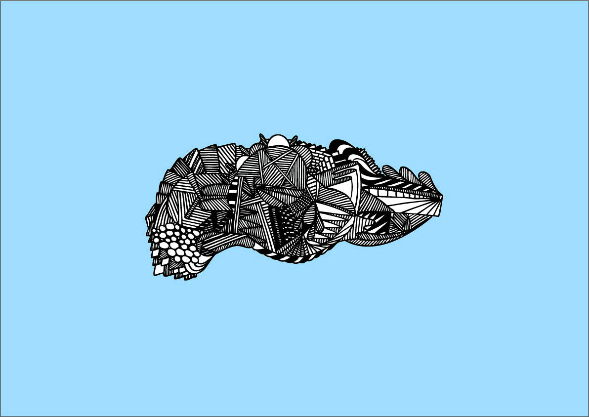
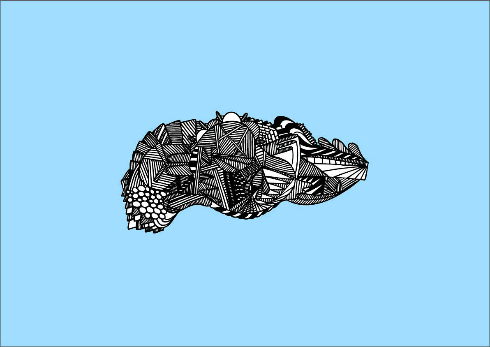
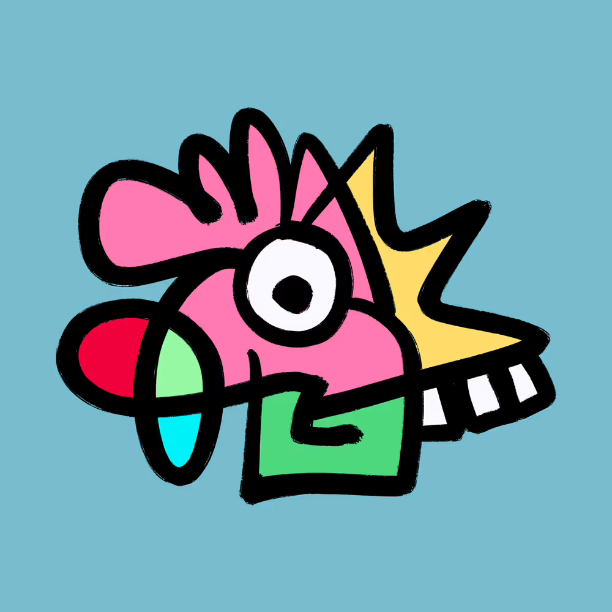
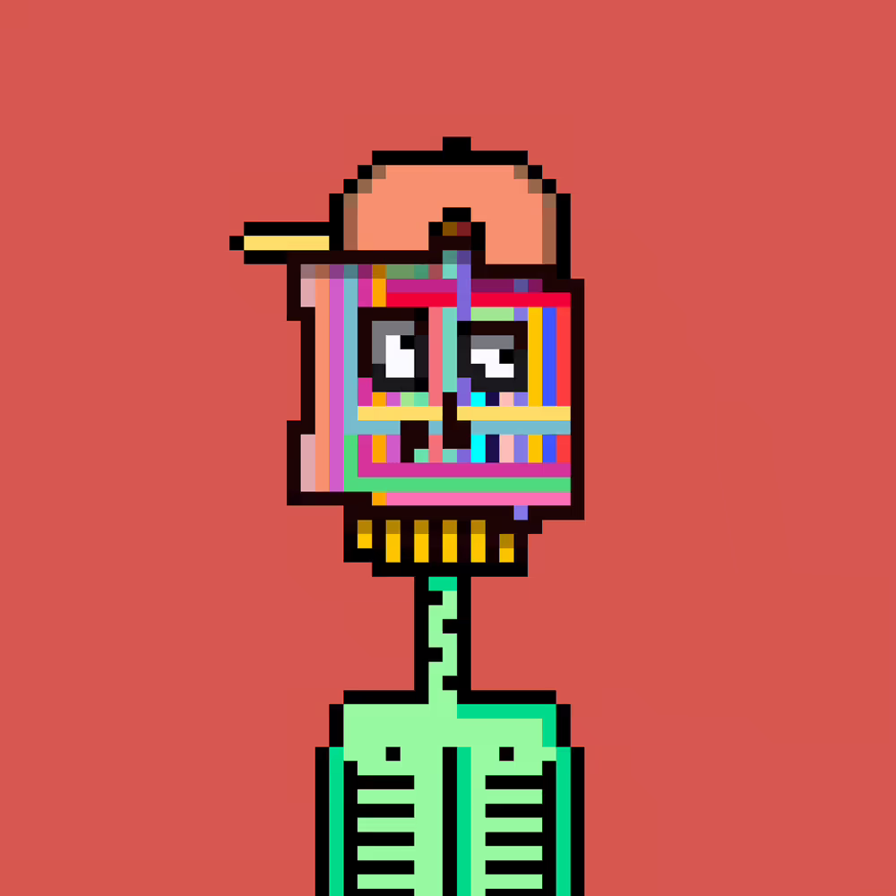
Selected WorksArt, Illustration & Type |
Medium | Various | |
|---|---|---|---|
| Discipline | Art, Illustration | ||
| By | LUKEABC | Date | — |
Personal and experimental work across illustration, hand-lettering, digital painting, file glitching, and graphic art.
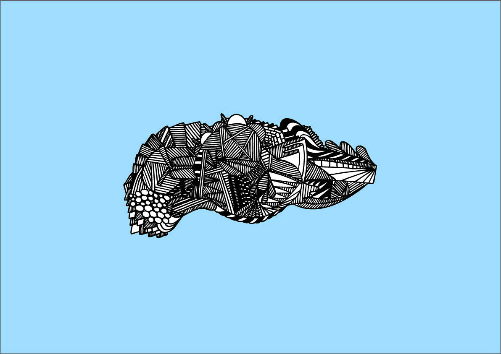


Early experiments in manually corrupting and manipulating image files — editing raw data to produce unexpected visual outputs.
| Role | Name |
|---|---|
| Art, Illustration | Lukeabc |